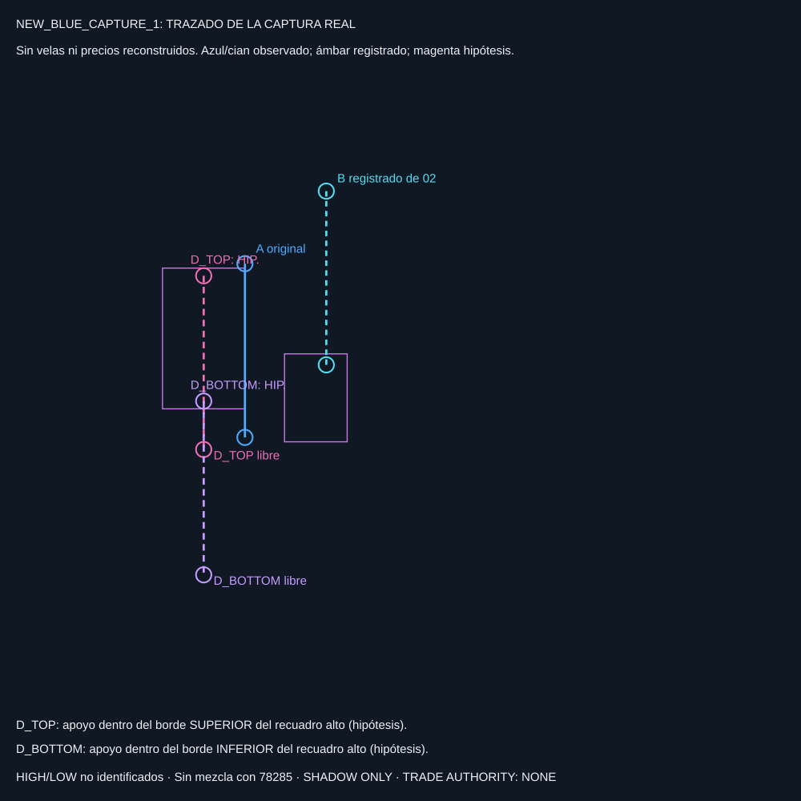
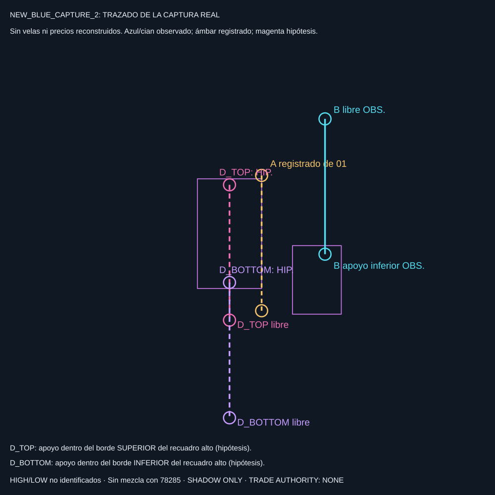

Originales privados no publicados. Cada trazado usa sus coordenadas observadas; no es el antiguo esquema simbólico. Las comparaciones con fotografía incrustada se generan por separado en research/cache.
Cian: copia superior observada o registrada. Magenta: dos apoyos inferiores hipotéticos, sin escoger ganador. HIGH/LOW no identificados. No se mezclan los niveles anteriores de 78285.


Mediciones reproducibles · Informe de las fuentes
SHADOW ONLY. TRADE AUTHORITY: NONE. Sin backtests, señales ni órdenes.